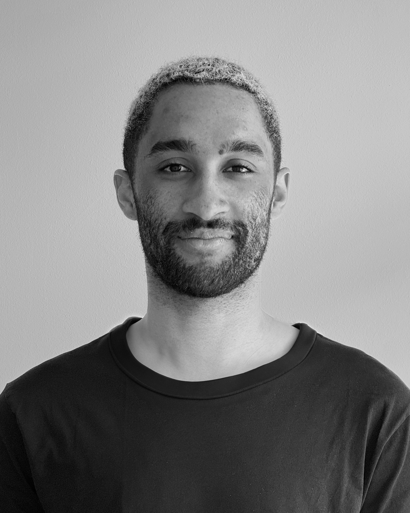

About
Berlin based product and interaction designer, focused on the intersection of design and technology. After working and studying in Berlin, Tokyo, and London, he is currently as a Senior Designerwith innovation & technology studio nFrontier by CreativeDock. Recent works include interactive prototypes and reactive animations for transportation industry clients, experience design for brands and film productions, research projects on robotics, fabrication and material innovation, and videography.
Clients & Collaborators
MINI · Airbus · Netflix · Hyundai · Dräxlmaier · Playmobil · Vossloh · Cornelsen · Lollapalooza · Hornbach · Neulant van Exel · Field.io · Jung von Matt Spree · Jung von Matt Nerd · Easy Does It · Heimat · Artificial Rome
Exhibitions & Publications
GET IN TOUCH
hello@yomiajani.com